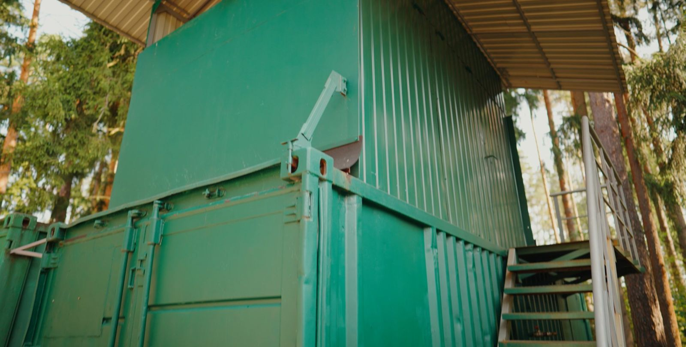
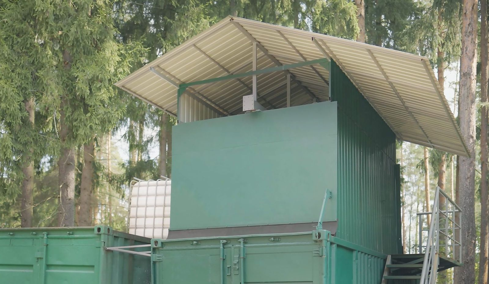
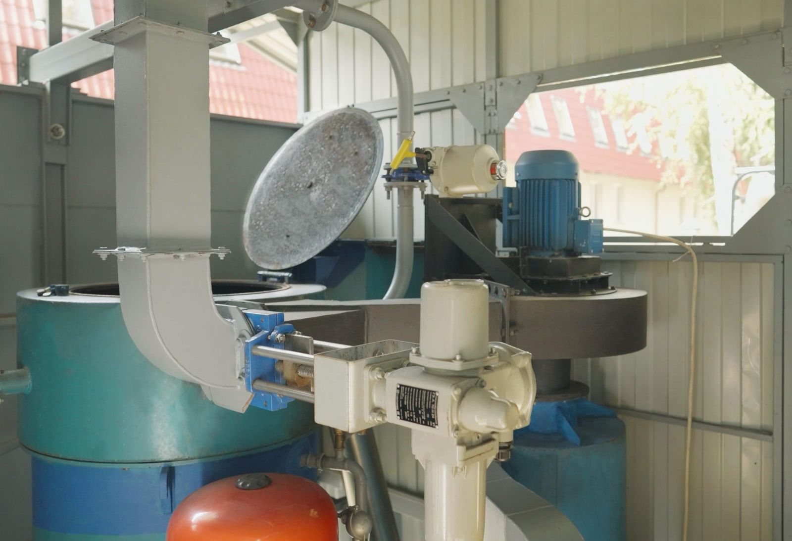

Экомодуль · тепло из отходов
Экомодуль РМ-1: установка для получения тепла из отходов
РМ-1 — высокотемпературный вихревой реактор в контейнерном исполнении. Ближайшая задача — измерить количество полезного тепла на объекте. Выработка электроэнергии рассматривается только после этого.




Опытно-промышленный образец
РМ-1 изготовлен; испытания подтвердили соответствие проверенным требованиям безопасности
Тепловую эффективность, состав выбросов и свойства зольного остатка ещё предстоит проверить отдельно.
Документы образца
- Технические условия
- ТУ 28.99.39-001-0107994046-2021, утверждены 13.01.2021
- Каталожный лист
- ФГБУ «РСТ», № 200/135957 от 23.09.2021
- Протокол испытаний
- № ФТ0921ПИ-3/117 от 30.09.2021: соответствие требованиям безопасности конструкции (ТР ТС 010/2011)
- Что не подтверждает
- Количество тепла, состав выбросов, класс остатка
Что предстоит подтвердить
- количество полезного тепла на тонну сырья
- состав отходящих газов — по протоколу аккредитованной лаборатории
- класс опасности зольного остатка
- пригодность каждого вида отходов
- экономику эксплуатации
Назначение
Отходы предприятия могут стать местным источником тепла
Что поступает
Углеродсодержащие отходы, пригодность которых подтверждена анализом.
Что получается
Тепло для отопления или технологии. Зольный остаток и отходящие газы учитываются и проверяются отдельно.
Где применяется
Промышленные и сельскохозяйственные предприятия, у которых есть отходы и потребность в тепле.
Проверка сырья
До предложения проводим лабораторный анализ и технологическую пробу. Проверяем:
Процесс
От подготовки сырья — к учёту тепла
Устройство реактора, режимы и алгоритмы не раскрываются.
Подготовка сырья
Сортировка и измельчение.
Разложение
Контролируемое высокотемпературное разложение в вихревом реакторе.
Тепло
Передача тепла в систему потребителя.
Учёт
Измерение тепла и электроэнергии на собственные нужды; протоколы выбросов и остатка.
Показатели
Ключевые показатели подтвердят испытания с измерениями
| Показатель | Значение | Единица | Объект | Дата | Источник | Статус |
|---|---|---|---|---|---|---|
| Собственное электропотреблениеСреднее значение при работе установки. | 5 | кВт | опытно-промышленный образец РМ-1, исследовательская площадка ЭКОТЕХ | 09.2026 | замер ЭКОТЕХ при пусковых испытаниях | ИЗМЕРЕНО |
| Тепловая мощностьМгновенное значение, а не среднее за время работы. Устойчивая мощность и выход тепла на тонну сырья подтверждаются испытаниями с приборным учётом. | 40 | кВт | опытно-промышленный образец РМ-1, исследовательская площадка ЭКОТЕХ | 09.2026 | замер ЭКОТЕХ при пусковых испытаниях | ИЗМЕРЕНО |
| Электропотребление за сутки5 кВт × 24 ч при круглосуточной работе. | 120 | кВт·ч/сут | опытно-промышленный образец РМ-1, исследовательская площадка ЭКОТЕХ | 09.2026 | расчёт по замеру 5 кВт | РАССЧИТАНО |
| Электропотребление за год120 кВт·ч/сут × 330 рабочих суток в год. | 39 600 | кВт·ч/год | опытно-промышленный образец РМ-1, исследовательская площадка ЭКОТЕХ | 09.2026 | расчёт по замеру 5 кВт | РАССЧИТАНО |
| Выход полезного тепла на тонну сырьяПредстоит измерить при испытаниях с приборным учётом. | — | кВт·ч/т | объект испытаний не выбран | 09.2026 | программа испытаний | ТРЕБУЕТ ПРОВЕРКИ |
| Производительность по сырьюПредстоит измерить при испытаниях. | — | т/сут | объект испытаний не выбран | 09.2026 | программа испытаний | ТРЕБУЕТ ПРОВЕРКИ |
| Состав выбросов | — | — | объект испытаний не выбран | 09.2026 | протокол анализа выбросов (ожидается) | ТРЕБУЕТ ПРОВЕРКИ |
| Класс зольного остатка | — | — | объект испытаний не выбран | 09.2026 | протокол анализа выбросов (ожидается) | ТРЕБУЕТ ПРОВЕРКИ |
| Годовая выработка тепла | —значение уточняется: источники расходятся, публикуется после сверки | кВт·ч/год | объект испытаний не выбран | 09.2026 | реестр расхождений | ТРЕБУЕТ ПРОВЕРКИ |
| Объём теплового аккумулятора | —значение уточняется: источники расходятся, публикуется после сверки | м³ | объект испытаний не выбран | 09.2026 | реестр расхождений | ТРЕБУЕТ ПРОВЕРКИ |
Главное
Количество полезного тепла ещё не измерено — это главный показатель испытаний на объекте.
Готовность
От испытаний — к проверке на объекте заказчика
- 01Концепция
- 02Исследования и разработка
- 03Опытный образец
- 04Испытания
сейчас - 05Испытания на объекте
- 06Подтверждение в промышленных условиях
- 07Внедрение
- 08Расширение применения
- Стадия
- Испытания
- На чём основана
- Опытно-промышленный образец РМ-1; запуски на собственной исследовательской площадке. Протоколы тепловых испытаний и выбросов ещё не получены
- Дата
- 09.2026
- Следующий этап
- Испытания на объекте заказчика: измерение полезного тепла, протоколы выбросов и зольного остатка
Опишите состав отходов
И расскажите, где требуется тепло — по этим данным проверим, подходит ли сырьё для испытаний.